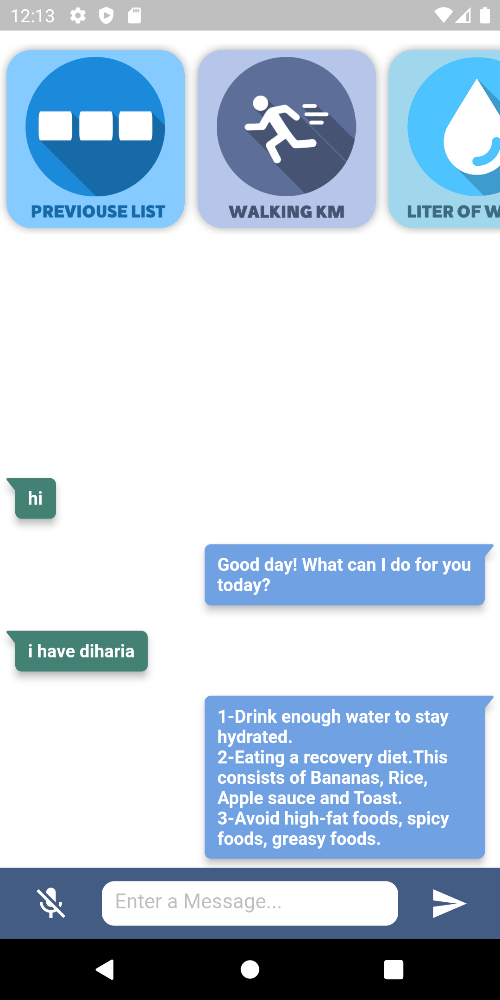

Health Assistant, concern with human health only, it give recommndations to the user for better health and if the user face illness or problem can chat with the chatbot to figure out solution.
How To Use Health Assistant?
Chatbot

Chatbot interact with the user by voice and text, and the user also can talk with the bot and chat with him. The Chatbot gives recommendations and the best treatment of the most common illness.
Profile
A profile contains a brief description of a person basic informations like, name, age.
Temperatures
Measureing the body-temperature and display it at the same time!. You can save the current reading by clicking on Save Record button.

View your Temperatures record history by clicking on Show Record button.
HeartBeat
Measureing the heartbeat of the human by putting your fingers on the sensors to display your heartbeat readings and save it by clicking on Save Record button. View your analyzed heartbeat reading by clicking on Show Record button.
In Show Record there is a graph that analyzes your heartbeat readings and shows if heartbeat are low, normal or high.
Body Mass Index
Body mass index (BMI) is a measure of body fat based on height and weight that applies to adult men and women. You can calucalate your BMI by clicking on the BMI icon
Blood Pressure

Is the pressure of circulating blood against the walls of blood vessels. You can enter your blood pressure by clicking on blood pressure icon
Blood Sugar
Is the main sugar found in your blood. It comes from the food you eat, and is your body's main source of energy. You can enter your blood sugar level by clicking on blood pressure icon
Liter Of Water
You can enter the amount of water you drinked for one day.
Walking
You can enter the walking distance you walked per day.
Settings
You can change your preferences on here.
AboutUs
Health Assistant is bulit by Musa Al-Sulami, Abdulaziz Al-Ghanmi and Rakan Al-Amri
Supervised By Dr. Morshed Derbali